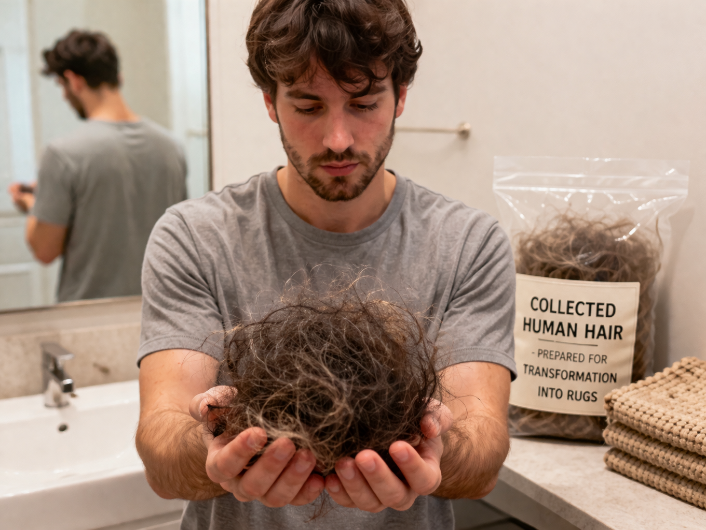
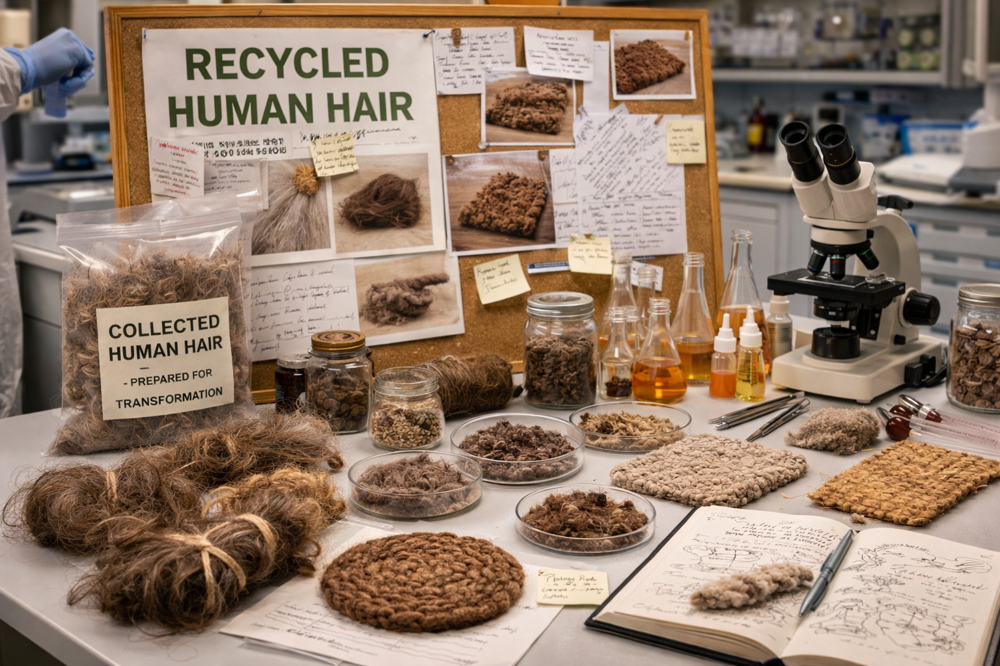

Material Storytelling
A strong image helps people remember what makes the project unusual.

Provocative visual
Challenge perception
Use a bold image to trigger curiosity, then explain the logic, treatment, and design value behind the project.

Research angle
Show the process behind the concept
Images of testing, samples, and material exploration make the project feel intentional and credible.